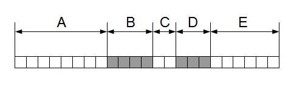

3. Data Quality Assurance
Source:vignettes/chapter3_QualityAssessment.Rmd
chapter3_QualityAssessment.RmdData quality assurance is an important part of GGIR. GGIR undertakes several key tasks aimed at evaluating, and, where possible, enhancing the quality of the data, as well as documenting what was done. These tasks are explained in this chapter.
Time gaps identification and imputation
Accelerometer data stored in binary format (e.g. .bin or .cwa) is typically structured in data blocks. Each data block has a header at the top and a constant number of data points per block, usually the equivalent of a few seconds of data. For the Axivity accelerometer with data stored in ‘.cwa’ file format and for the Parmay Matrix sensor with data stored in ‘.bin’ or ‘.BIN’ format those blocks can, on rare occasions, be corrupted and unreadable, therefore creating a gap in the information recorded.
For the ActiGraph accelerometer, but also some other sensor brands that export data in ‘csv’ file format, it is possible that the recording stops at certain time when it is not moved for a while and starts recording after some time, therefore creating a time gap.
GGIR has been developed to efficiently identify and manage these time gaps.
Time gaps in Axivity cwa and Parmay Matrix bin/BIN files
Although this is not expected to occur often, Axivity cwa and Parmay
Matrix bin/BIN data can come with faulty data blocks. By ‘faulty’ we
mean that the data in the block is not interpretable. For example,
faulty blocks may occur when the device in recording mode is connected
to a computer with a USB cable. To address this, the R package
GGIRread, as used by GGIR, identifies these faulty blocks
and imputes them by the last recorded non-faulty acceleration value
normalised to 1 g (g is the unit for gravitational
acceleration). In the case that no previous non-faulty value is found,
then acceleration is imputed by 0, 0, and 1 for x, y, and z axis,
respectively.
The sampling rate of an accelerometer refers to the number of data
points recorded and stored per second. Axivity and Parmay Matrix devices
are expected by design to have a slightly variable sampling rate over
time, which is accounted for by interpolating the data after it is
loaded into R. For example, the data may have been collected at 99.7
Hertz for one block, and the interpolation technique will then
interpolate the data such that it is 100 Hertz. The interpolation
happens inside the R package GGIRread. The exact technique
used for the interpolation is set by parameter
interpolationType and uses linear interpolation by default
(interpolationType = 1), but you can also set it to nearest
neighbour interpolation (interpolationType = 2). As a
quality assurance, GGIRread keeps track of the variation in
sampling rate per data block and automatically imputes blocks (smallest
segment of data in a cwa file, typically a few seconds long) where the
sampling rate deviates by more than 10% from the expected sampling rate.
The imputation technique is the same as for the time gaps as detailed
earlier in this section. If you are unhappy with the 10% threshold then
you have the possibility of changing this percentage with the parameter
frequency_tol. Biased sampling rates of this kind are
expected to be extremely rare and are not expected to affect normal
research conditions, but we nonetheless like to be able to account for
them.
Additionally, to monitor this process of handling faulty blocks and
outliers in sampling rate, GGIRread logs a series of file
health statistics which are stored by GGIR in the
‘data_quality_report.csv’ file located within the ‘QC’ folder of the
output directory ‘results’ (see previous chapter for discussion on GGIR
output). The data quality report, comes with variable names prefixed
with ‘filehealth’, detailing the number and duration of time gaps
detected during the recording(s), as well as number of epochs that have
5-10% or more than 10% bias in sampling rate.
Time gaps in ActiGraph gt3x and ad-hoc csv files
Some manufacturers incorporate functionalities in their devices to let them stop recording during long episode of no movement, aiming to conserve battery life and reduce data size. However, this feature results in recorded signals containing intermittent time gaps that must be accounted for during data processing.
For example, ActiGraph has the option called ‘idle sleep mode’ in their devices, which pauses data collection when no movement is detected for a sustained period of time. The ActiGraph’s idle sleep mode is explained on the manufacturer’s website.
The time gaps in the data are considered non-wear time in GGIR. GGIR imputes gaps shorter than 90 minutes at raw data level, using the last recorded value (meaning before the gap) normalised to 1 g. This approach assumes that accelerometer was kept in the same orientation as it was last observed. On the contrary, gaps longer than 90 minutes are imputed at epoch level to make the data processing more memory efficient and faster. The epoch level imputation is discussed in chapter 6. The number and duration of the time gaps found are logged by GGIR in the ‘data_quality_report.csv’ file located within the ‘QC’ folder of the output directory ‘results’ (see previous chapter for discussion on GGIR output).
Studies often forget to clarify whether the accelerometers were configured to pause data collection during periods of no movement and, if so, how the resulting time gaps were accounted for in the data processing. Especially, if the device firmware or manufacturer software already imputes the time gaps that can cause significant bias to the GGIR estimates. More generally speaking, we advise to:
Report whether ‘idle sleep mode’ or similar functionalities were used.
Disable such functionality, if possible, as it harms the transparency and reproducibility of research. Indeed, no mechanism exists to replicate the time gaps in other accelerometer brands, and it is likely to challenge accurate assessment of sleep and sedentary behaviour.
That data collected with ‘idle sleep mode’ or similar functionalities is not referred to as raw data accelerometry, because the data collection process has involved proprietary pre-processing steps which violate the core principle of raw data collection.
Specific note on ActiGraph idle sleep mode
ActiGraph files might be exported in gt3x or csv formats. When idle sleep mode is used, data in these files are different. In gt3x files, time gaps can be found in the signal, with no imputation made by the ActiLife software. However, csv files exported in ActiLife will have imputed values in all three axes during periods of no movement. Note that this imputation by the ActiLife software has changed at some point in time. Initially the imputation was zeros but with more recent versions of ActiLife the imputation uses the last recorded value for each axis. Therefore, you need to be aware that GGIR will take care of the time gap imputation relative to the idle sleep mode when using gt3x files, but not when using ActiGraph csv files (because the latter come with the time gaps already imputed).
Accelerometer sensor calibration
Many measurement tools require calibration ranging from weighting scales for body weight, to Oxygen sensor, to accelerometers. Without good calibration we risk that the error caused by lack of calibration undermines accurate and reliable measurement.
Confusingly for accelerometers, the field has for a long time assumed that accelerometers need to be calibrated relative to energy expenditure. This is incorrect because energy expenditure is a different physiological construct. The true reference for accelerometer sensors is acceleration which we can calibrate with gravitational acceleration as a reference.
An acceleration sensor works based on the principle that acceleration is captured mechanically and converted into an electrical signal. The relationship between the electrical signal and the acceleration is usually assumed to be linear, involving an offset and a gain factor. If you are not familiar with these terms, you could compare it with a simple regression equation where the offset is the Beta0 (Y-intercept) and the gain is the Beta1 (slope). Therefore, an offset is a number that we add to the signal to adjust for systematic error (bias) and a gain is a number with which we multiply the signal to scale it, in order to adjust it for relative error. We shall refer to the establishment of the offset and gain factor as the sensor calibration procedure.
There are three types of calibration:
- Factory calibration, done by industry (always done, but may need refinement afterward).
- Manual calibration, done by researcher (not advisable and in some cases not even possible).
- Auto-calibration, done by algorithms on real life study data (most common scenario to refine the factory calibration).
- Accelerometers are usually calibrated as part of the manufacturing process under non-movement conditions using the local gravitational acceleration as a reference, this is referred to as factory calibration.
- The manufacturer calibration can later be evaluated by holding each sensor axis parallel (up and down) or perpendicular to the direction of gravity; readings for each axis should be ±1.000 and 0.000 g, respectively. With these one could derive correction coefficients per axis. However, this procedure can be cumbersome in studies with a high throughput. Furthermore, such a calibration check will not be possible for data that has been collected in the past and for which the corresponding accelerometer device does not exist anymore. That is the reason why this calibraton is not advisable and in some cases not possible.
- Finally, the auto-calibration is the type of calibration done by an algorithm using your already collected real world data withoutb the need for additional experiments, which we will explain in more detail.
Auto-calibration algorithm
The general principle of these techniques is that a recording of acceleration is screened for non-movement periods. Next, the rolling average over the non-movement periods is taken from each of the three orthogonal sensor axes and used to generate a three-dimensional ellipsoid representation that should ideally be a sphere with radius 1 g. Here, deviations between the radius of the three-dimensional ellipsoid and 1 g (ideal calibration) can then be used to derive correction factors for sensor axis-specific calibration error. This auto-calibration performed by GGIR uses this technique and a more detailed description and demonstration can be found in the published paper.
The success of the auto-calibration depends on the number of
non-movement periods and variation of accelerometer orientation during
those periods available to the algorithm. As a result, auto-calibration
is expected to perform less in very short recordings (e.g., less than a
day) or in recordings in which the participant did not wear the
accelerometer for most of the time. In such cases, you can use other
recordings from the same sensor that have more no-movement periods in a
higher variation of orientations to derive its calibration coefficients,
and then apply these coefficients to the recording of interest. To do
so, you should use the parameter backup.cal.coef.
The auto-calibration algorithm is applied by default but can be
turned off with the parameter do.cal = FALSE. We do not
recommend turning off the auto-calibration unless you have strong
reasons to do so.
Non-wear detection
It can happen that a study participant does not wear the accelerometer. This can happen for a variety of reasons: getting tired of wearing the accelerometer, forgetting to put the accelerometer back on after a short moment of not wearing it, or getting instructed by the researcher to take it off. However, when accelerometer are not worn, they still collect data. When the accelerometer is lying still, the data collected looks like as if the participant that is supposed to wear it does is not moving. If left undetected, not wearing the accelerometer would bias the estimates of time spent in inactive behaviours.
Accelerometer non-wear time is detected by GGIR by looking at the standard deviation and range in the raw acceleration signals. If the time window over which these statistical values are calculated is long enough, they turn out to be a reliable indicators of whether the accelerometer is worn or not.
More specifically, the standard deviation and value range (i.e., maximum value minus minimum value) are calculated per 60 minute windows that start every 15 minutes (e.g. 14:00, 14:15, etc.) . The overlapping nature of the time windows is needed to improve precision. Each time window is labelled as non-wear, if at least the statistical values of 2 out of the 3 axes meet brand specific thresholds. As a result, since multiple overlapping time windows classify the same 15 minutes, each 15 minute window is classified multiple times. If the non-wear criteria are met for any of these windows that overlap with the 15-minute window, it will be labelled as non-wear. For most brands it is 13.0 mg and less than 50 mg.
The size of the time window (60 minutes) and the size of the time
intervals of 15 minutes are defined by the parameter
windowsizes, which has three values. More specifically, the
first value is not used for non-wear detection but discussed in the next
chapter, the second value defines the above mentioned intervals of 15
minutes , and the third value is the above mentioned 60 minutes time
window.
The non-wear classification, as discussed above, is the default as of
2023. Prior to this, GGIR had a slightly different non-wear detection
algorithm which is still available via parameter
nonwear_approach but we do not recommend you to use it.
Identifying implausible wear time
It can happen that time classified as wear time is implausible for example when the accelerometer is in the post or moved around by the researcher ahead of the actually intended wear period.
For example, when the accelerometer is in the post long periods of non-wear are briefly interrupted by periods of movement, which are interpreted by the algorithm as monitor wear. Therefore, in GGIR part 2, the detected non-wear from GGIR part 1 is checked for implausible wear periods which are then relabelled as non-wear. If you are not sure what we mean by part 1 and 2 then see chapter 1, which gives an overview. GGIR part 2 performs this check as follows: First , all detected wear-periods that last less than six hours, and have a duration less than 30% of the combined duration of their bordering non-wear periods, are relabelled as non-wear. Second, all remaining wear-periods of less than three hours, and which form less than 80% of their bordering non-wear periods, are classified as non-wear.
The motivation for selecting a relatively high criterion (< 30%) in combination with a long period (6 hrs) and a low criterion (< 80%) in combination with a short period (3 hrs) is that long periods are more likely to be actually related to monitor wear time. To illustrate the algorithm we created a visual model, see picture below. Here, units of time are presented in squares and marked grey if detected as non-wear time. Period C is detected as wear-time and borders to non-wear periods B and D. If the length of C is less than six hours and C divided by the sum of B and D is less than 0.3 then the first criteria is met and block C is turned into a non-wear period.

Visual inspection of >100 traces from a large observational study revealed that applying this stage three times iteratively allowed for improved classification of periods characterised by intermittent periods of non-wear and apparent wear.
Implausible wear at the beginning and end of the recording
Based on experience, some participants take off the accelerometer in the final 24 hours of recording before the actual end. However, this may be hard to detect as the accelerometer may still be moved. Therefore, GGIR relabels all wear-periods in the final 24 hrs of each recording shorter than three hours and preceded by at least one hour of non-wear time as non-wear.
Finally, if the recording starts or ends with a period of less than
three hours of wear followed or preceded by non-wear (any length), then
this period of wear is classified as non-wear. These additional criteria
for screening the beginning and end of the accelerometer file are
intended to filter out the movements related to attaching the
accelerometer at the start or downloading the data from the
accelerometer at the end. This final check can be turned off with
parameter nonWearEdgeCorrection, which may be relevant when
processing accelerometer data collected during single-night
polysomnography studies.
Clipping detection
GGIR part 1 also screens the acceleration signal for “clipping”, i.e., sustained unusual high (raw) acceleration values non compatible with human movement. If more than 30% of the data points in a 15-minute window (same as used for non-wear) are close to the maximal values (technical term for this is dynamic range) of this sensor, the corresponding time period is considered as potentially unreliable, which may be explained by the sensor getting stuck at its extreme value or accelerometers being used inappropriately (attached to some heavily accelerating object). For example, for a dynamic range of 8g, accelerations over 7.5g would be marked as “clipping”. The window is also classified as clipping if any value in the window is larger than 150% the dynamic range of the sensor. Given that clipping rarely happens it is reported by GGIR as part of non-wear time. Both clipping and non-wear are treated the same and by merging them we arrive at a single indicator for the amount of invalid data. However, to keep track of the occurrence of clipping time, GGIR does report the fraction of 15-minute windows in a recording during which clipping occurs, see section on output below.
GGIR output
| (Part of) variable name | Description | Report(s) |
|---|---|---|
| calib_err | Calibration error (static estimate) Estimated based on all ‘non-movement’ periods in the recording after applying the autocalibration | part2_summary.csv |
| calib_status | Calibration status: Summary statement about the status of the calibration error minimisation | part2_summary.csv |
| calib_status | Calibration status: Summary statement about the status of the calibration error minimisation | part2_summary.csv |
| N hours | Number of hours of recording in a day, which typically is 24, unless it is a day on which the clock changes (DST) resulting in 23 or 25 hours. The value can be less than 23 if the recording started or ended this day | part2_summary.csv and part2_daysummary.csv |
| N valid hours | Number of hours with valid data in the day | part2_summary.csv and part2_daysummary.csv |
| fraction_night_invalid | Fraction of the night (noon-noon or 6pm-6pm) for which the data was invalid, e.g. monitor not worn or no accelerometer recording started/ended within the night | part4_nightsummary and part4_summary_sleep |
| nonwear_perc_day | Non-wear percentage during the waking hours of this day | part5_daysummary and part5_summary |
| nonwear_perc_spt | Non-wear percentage during the sleep period time hours of this day | part5_daysummary and part5_summary |
| nonwear_perc_day_spt | Non-wear percentage during the whole day, including waking and sleep period time | part5_daysummary and part5_summary |
| clipping_score | The Clipping score: Fraction of 15 minute windows per file for which the acceleration in one of the three axis was close to the maximum for at least 80% of the time. This should be 0 | part2_summary.csv |
| cal.error.start | Calibration error (static estimate) Estimated based on all ‘non-movement’ periods in the recording before applying the autocalibration | QC/data_quality_report.csv |
| cal.error.end | Calibration error (static estimate) Estimated based on all ‘non-movement’ periods in the recording after applying the autocalibration | QC/data_quality_report.csv |
| QCmessage | Calibration status: Summary statement about the status of the calibration error minimisation | QC/data_quality_report.csv |
| NFilePagesSkipped | (Only for Axivity .cwa format) Number of raw data blocks skipped | QC/data_quality_report.csv |
| filehealth_totimp_min | (Only for Axivity .cwa, ActiGraph gt3x, and ad-hoc csv format) Total number of minutes of raw data imputed | QC/data_quality_report.csv |
| filehealth_checksumfail_min | (Only for Axivity .cwa format) Total number of minutes of raw data where the checksum failed | QC/data_quality_report.csv |
| filehealth_niblockid_min | (Only for Axivity .cwa format) Total number of minutes of raw data with non-incremental block ids | QC/data_quality_report.csv |
| filehealth_fbias0510_min | (Only for Axivity .cwa format) Total number of minutes with a sampling frequency bias between 5 and 10% | QC/data_quality_report.csv |
| filehealth_fbias1020_min | (Only for Axivity .cwa format) Total number of minutes with a sampling frequency bias between 10 and 20% | QC/data_quality_report.csv |
| filehealth_fbias2030_min | (Only for Axivity .cwa format) Total number of minutes with a sampling frequency bias between 20 and 30% | QC/data_quality_report.csv |
| filehealth_fbias30_min | (Only for Axivity .cwa format) Total number of minutes with a sampling frequency bias higher than 30% | QC/data_quality_report.csv |
| filehealth_totimp_N | (Only for Axivity .cwa, ActiGraph gt3x, and ad-hoc csv format) Total number of data blocks that were imputed | QC/data_quality_report.csv |
| filehealth_checksumfail_N | (Only for Axivity .cwa format) Total number of blocks where the checksum failed | QC/data_quality_report.csv |
| filehealth_niblockid_N | (Only for Axivity .cwa format) Total number of raw data blocks with non-incremental block ids | QC/data_quality_report.csv |
| filehealth_fbias0510_N | (Only for Axivity .cwa format) Total number of raw data blocks with a sampling frequency bias between 5 and 10% | QC/data_quality_report.csv |
| filehealth_fbias1020_N | (Only for Axivity .cwa format) Total number of raw data blocks with a sampling frequency bias between 10 and 20% | QC/data_quality_report.csv |
| filehealth_fbias2030_N | (Only for Axivity .cwa format) Total number of raw data blocks with a sampling frequency bias between 20 and 30% | QC/data_quality_report.csv |
| filehealth_fbias30_N | (Only for Axivity .cwa format) Total number of raw data blocks with a sampling frequency bias higher than 30% | QC/data_quality_report.csv |
| filehealth_0vars_missing | (Only for Fitbit externally derived data) Percentage of data with 0 missing variables | QC/data_quality_report.csv |
| filehealth_1vars_missing | (Only for Fitbit externally derived data) Percentage of data with 1 missing variables | QC/data_quality_report.csv |
| filehealth_2vars_missing | (Only for Fitbit externally derived data) Percentage of data with 2 missing variables | QC/data_quality_report.csv |
| filehealth_3vars_missing | (Only for Fitbit externally derived data) Percentage of data with 3 missing variables | QC/data_quality_report.csv |
| filehealth_4vars_missing | (Only for Fitbit externally derived data) Percentage of data with 4 missing variables | QC/data_quality_report.csv |
| filehealth_ExtAct_missing | (Only for Fitbit externally derived data) Percentage of data where ExtAct is missing. | QC/data_quality_report.csv |
| filehealth_ExtStep_missing | (Only for Fitbit externally derived data) Percentage of data where ExtStep is missing. | QC/data_quality_report.csv |
| filehealth_ExtHeartRate_missing | (Only for Fitbit externally derived data) Percentage of data where ExtHeartRate is missing. | QC/data_quality_report.csv |
| filehealth_ExtSleep_missing | (Only for Fitbit externally derived data) Percentage of data where ExtSleep is missing. | QC/data_quality_report.csv |
| filehealth_ExtSleep_y_ExtAct_missing | (Only for Fitbit externally derived data) Percentage of data where both ExtSleep and ExtAct are missing. | QC/data_quality_report.csv |
References
van Hees VT, Fang Z, Langford J, Assah F, Mohammad A, da Silva IC, Trenell MI, White T, Wareham NJ, Brage S. Autocalibration of accelerometer data for free-living physical activity assessment using local gravity and temperature: an evaluation on four continents. J Appl Physiol (1985). 2014 Oct 1;117(7):738-44. PMID: 25103964 link
van Hees VT, Gorzelniak L, Dean León EC, Eder M, Pias M, Taherian S, Ekelund U, Renström F, Franks PW, Horsch A, Brage S. Separating movement and gravity components in an acceleration signal and implications for the assessment of human daily physical activity. PLoS One. 2013 Apr 23